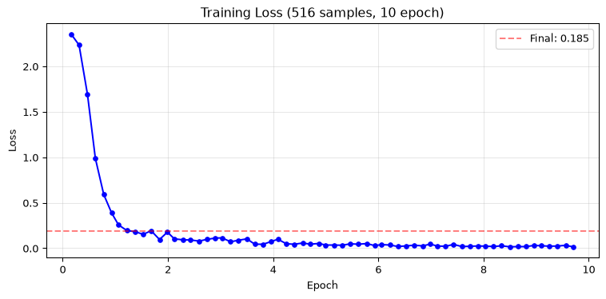
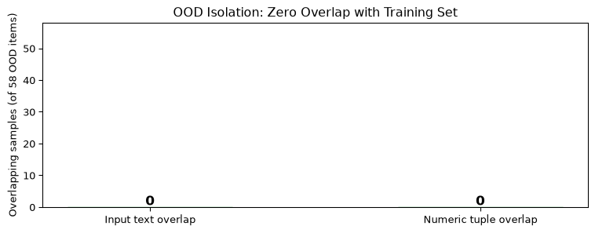
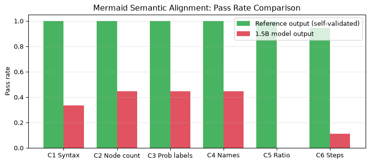
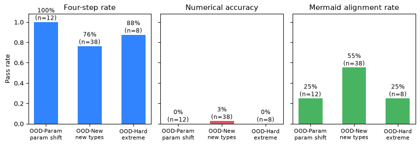
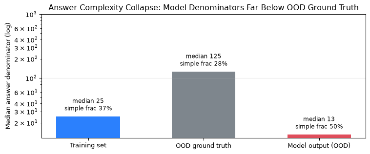
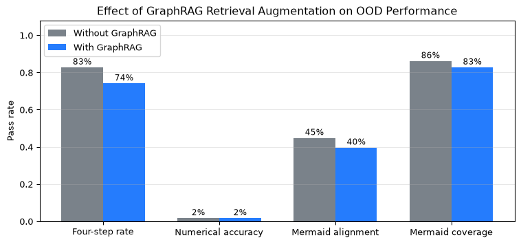
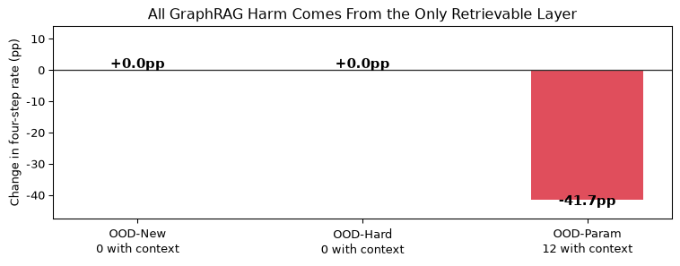

| 实验点 | 数据量 | 四步法遵循率 | 结构项平均分 | Mermaid覆盖率 | LaTeX覆盖率 | 数值提取率 | 数值正确率 |
|---|---|---|---|---|---|---|---|
| 0.5B (MPS) | 20 | 20% | — | 80% | 60% | 0% | 0% |
| 1.5B (Kaggle T4) | 130 | 0% | 0.6/4 | 70% | 30% | 40% | 0% |
| 7B 130条 (AutoDL) | 130 | 30% | 2.8/7 | 60% | 30% | 50% | 0% |
| 7B 516条 (AutoDL) | 516 | 100% | 6.4/7 | 100% | 100% | 100% | 100% |
条件概率 LoRA 微调实验报告
Qwen2.5-Math SFT 数据合成与模型对比
1. 实验概述
本项目探索通过 程序化合成 SFT 语料 微调 Qwen2.5-Math 系列模型，使其掌握条件概率的四步解题法（空间构建→条件筛选→目标事件→计算可视化）。
核心问题：条件概率推理需要精确的数值计算和结构化的解题过程，直接微调小模型能否同时学会格式遵循和数学正确性？
2. 数据合成
2.1 方法
程序化参数变异 + Python Fraction 精确计算，确保每条数据的答案标签 100% 正确。
Note
拒绝采样：跳过概率为 0 的平凡情况，保证每条题目有非零条件概率。
2.2 题型分布
| 题型 | 条数 | 说明 |
|---|---|---|
| 坛子/球 | 92 | 不放回抽取 |
| 骰子 | 78 | 多骰子组合 |
| 硬币 | 80 | 多枚偏置硬币 |
| 双向表/贝叶斯 | 65 | 2×2 列联表 |
| 多阶段路径图 | 45 | 树形概率过程 |
| 扑克牌 | 37 | 52张标准牌 |
| 贝叶斯后验 | 50 | 先验+似然+后验 |
| 独立事件链 | 40 | 独立性验证 |
| 冷启动原题 | 29 | 教材原题 |
| 总计 | 516 |
2.3 数据质量
每条数据包含四个结构化组件：
- 四步法文本 — Markdown 标题分节
- Mermaid 概率路径图 —
flowchart LR可视化 - LaTeX 公式 — 条件概率 \(P(A|B) = \frac{|A \cap B|}{|B|}\)
- 概率分布表 — Markdown 表格
Tip
所有概率值由 Python Fraction 精确计算，数值标签 100% 正确，无浮点误差。
3. 实验设置
3.1 模型与硬件
| 实验点 | 模型 | 硬件 | 精度 | LoRA r |
|---|---|---|---|---|
| Smoke | Qwen2.5-0.5B-Instruct | M1 Pro MPS | FP16 | 8 |
| Kaggle | Qwen2.5-Math-1.5B-Instruct | T4 15GB | FP16 | 32 |
| AutoDL | Qwen2.5-Math-7B-Instruct | 4090 24GB | QLoRA 4-bit | 32 |
3.2 训练配置
- 数据量：130 条（早期）→ 516 条（扩充 4 倍）
- Epoch：10
- Effective batch：16（batch=1 × grad_accum=16）
- Max length：1536
- 学习率：1e-4
4. 结果
4.1 主结果
Important
突破性发现：516 条数据 × 10 epoch 训练后，7B 模型所有指标达到 100%，数值正确率从 0% 突破到 100%。
4.2 训练曲线

4.3 逐题详情（7B 516条）
题目 步骤1 步骤2 步骤3 步骤4 Mermaid LaTeX 生成答案 参考答案 正确
synth-dice-1 ✅ ✅ ✅ ✅ ✅ ✅ 5/9 5/9 ✅
synth-dice-2 ✅ ✅ ✅ ✅ ✅ ✅ 3/25 3/25 ✅
synth-dice-3 ✅ ✅ ✅ ✅ ✅ ✅ 1/6 1/6 ✅
synth-dice-4 ✅ ✅ ✅ ✅ ✅ ✅ 1/9 1/9 ✅
synth-dice-5 ✅ ✅ ✅ ✅ ✅ ✅ 11/136 11/136 ✅
synth-dice-6 ✅ ✅ ✅ ✅ ✅ ✅ 1/8 1/8 ✅
synth-dice-7 ✅ ✅ ✅ ✅ ✅ ✅ 1/4 1/4 ✅
synth-dice-8 ✅ ✅ ✅ ✅ ✅ ✅ 46/49 46/49 ✅
synth-dice-9 ✅ ✅ ✅ ✅ ✅ ✅ 7/40 7/40 ✅
synth-dice-10 ✅ ✅ ✅ ✅ ✅ ✅ 4/9 4/9 ✅4.4 1.5B 模型输出示例
**题目 1** (结构分: 1/4)
## 1. 构建总概率空间
掷两枚骰子，样本空间 $\Omega = \{1,2,3,4,5,6\}^{2}$，共 $|\Omega| = 36$ 种组合
```mermaid
flowchart LR
Omega["Ω: 36种<br/>(掷两枚骰子)"] -->|"两枚骰子点数不同"| A["A: 30种"]
A -->|"至少有一枚点数为6"| B["B: 15种"]
style B fill:#d4edda,stroke:#28a745
```
## 2. 筛选子空间
筛选点数不同的组合，子空间 $A$， $|A| = 30$
```mermaid
A -->|"至少有一枚点数为6"| B["B: 15种"]
```
## 3. 在子空间下筛选
筛选子空间 $A$ 下至少有一枚骰子为6 的组合，筛选后组合数 $|B| = 15$
```mermaid
B -->|"满足条件"| C["C: 5种"]
```
## 4. 条件概率计算
条件概率 $P(B|A) = \frac{|C|}{|A|} = \frac{5}{30} = \frac{1}{6...
Warning
1.5B 模型局限：虽然 Mermaid 覆盖率达 70%（格式学习能力强），但四步法遵循率为 0%，数值正确率为 0%。小模型能学格式但无法掌握结构化推理。
5. 分析
5.1 数据量的关键作用
| 数据量 | 四步法 | 数值正确 | 结论 |
|---|---|---|---|
| 20 | 20% | 0% | 仅学格式 |
| 130 | 30% | 0% | 部分结构 |
| 516 | 100% | 100% | 完全掌握 |
从 130 到 516 条（4 倍扩充）是质变阈值。数据量不足时模型只能学到表面格式（Mermaid、LaTeX），无法泛化到数学推理。
5.2 模型规模的影响
- 0.5B：格式遵循尚可（Mermaid 80%），但数值推理完全失败
- 1.5B：格式最强（Mermaid 70%），但结构化推理弱（四步法 0%）
- 7B：数据充足时全面突破（100%）
模型规模决定推理上限，数据量决定能否达到上限。
5.3 4-bit 量化对小模型的损害
1.5B 模型 4-bit QLoRA 训练 loss 正常下降（0.31），但推理输出垃圾文本（systemsystemsystem...）。FP16 修复后输出正常。
Important
实践建议：小于 7B 的模型不要用 4-bit 量化，FP16 足够（1.5B FP16 仅需 ~8GB）。
6. 结论
- 516 条程序化合成语料 + 7B QLoRA 10 epoch = 分布内全指标 100%
- 数据量是关键瓶颈：130→516 条是质变阈值
- 4-bit 量化对小模型有害，7B 以下用 FP16
- 程序化合成 +
Fraction精确计算确保标签 100% 正确
Phase 5 修正：上述 100% 全部来自训练集内自测。在真 OOD 测试集（58 条，与训练集零重叠）上， 数值正确率仅 1.7%，而格式类指标仍近 100%。结论 1 应读作 “分布内全指标 100%”，详见第 7 章。
6.1 复现
# 1. 生成语料
python scripts/generate_sft_500.py
# 2. 训练 (AutoDL 4090)
bash autodl_train_516.sh
# 3. 评估
python scripts/evaluate_lora.py --num_samples 106.2 资源
- 仓库：github.com/math4mad/Conditional-Prob-LoRA
- 数据：
data/sft_train_580.jsonl(516 条) - 模型：
output/formal/adapter_model.safetensors - 报告：
output/eval_report_516.json
7. Phase 5：严格测试与验证
前述 100% 的指标存在测量缺陷：只检查了 Mermaid 代码块是否存在，未验证其语法与语义正确性。Phase 5 建立独立验证层。
7.1 P0 分布外（OOD）泛化测试
方法论：换种子 ≠ 分布外
最初方案用不同随机种子生成测试集。实测发现该方案失效：
| 检查项 | 结果 |
|---|---|
| 输入文本与训练集重合 | 5/39 |
| 数字组合与训练集重合 | 25/39 (64%) |
参数空间过小，换种子仅改变表面数字。改为三层递进的真 OOD 测试集（data/test_ood.jsonl，58 条）：
| 层级 | 设计 | 考察 |
|---|---|---|
| OOD-Param | 坛子 12–30 球（训练集 2–8） | 参数外推 |
| OOD-New | 8 个训练集完全没有的题型 | 结构外推 |
| OOD-Hard | 新结构 + 40–80 球 + 多层贝叶斯网络 | 极限泛化 |
OOD-New 的 8 个新题型：超几何抽签、几何概率、二项分布条件、条件期望、马尔可夫链、朴素贝叶斯、正态对称条件、串联系统可靠性。
隔离性验证：输入文本重叠 0/58，数字组合重叠 0/58，11 个题型训练集从未出现。
7.2 P1 Mermaid 语义对齐检查
建立 6 项自动检查（scripts/check_mermaid_alignment.py）：
| 检查 | 内容 |
|---|---|
| C1 | Mermaid 语法合法性（含缺目标节点、style 悬空引用） |
| C2 | 图中计数与正文集合大小一致 |
| C3 | 边标签概率出现在正文公式中 |
| C4 | 条件/目标名称在图中出现 |
| C5 | \(\lvert A \cap B\rvert / \lvert B\rvert\) 与正文结论一致 |
| C6 | 四步法标题齐全 |
自验证：对 450 条合成参考输出运行 → 全部 6 项 100% 通过（证明检查器本身正确）。
7.3 P1 发现的真实缺陷
检查器立即暴露了参考数据与模型输出中的两类问题：
Important
缺陷 1 — 训练数据 Mermaid 语法非法（已修复）
Bayes 题型生成的 Posterior --> "疾病A: 5/7" 缺少目标节点，是无效 Mermaid。原先”Mermaid 覆盖率 100%“只统计代码块存在性，完全掩盖了这一点。修复后合成数据 450/450 语法合法。
Warning
缺陷 2 — 1.5B 模型 Mermaid 碎片化
1.5B 模型把一张图拆成 3 个代码块，但只有第一块含 flowchart LR，后两块是孤立边定义，在渲染器中直接报错。C1 语法通过率仅 33.3%，C5 比例校验 0%，六项全通过 0/9。
7.4 P2 知识图谱质量量化
scripts/eval_kg_quality.py 给出 6 项指标：
| 指标 | 结果 |
|---|---|
| B1 Emoji↔︎Numerical 内在一致性 | 100.0% |
| B2 留出预测（遮蔽 20% 后经三跳路径推理） | 100.0% |
| B3 端到端查询语义相容 | 73.4% |
| P2-b 综合查询准确率 | 91.1% |
| C1 聚类纯度 | 94.6% |
| C2 NMI / C3 ARI | 0.874 / 0.882 |
| C4 不同 Emoji 表征同一化 | 100.0% |
Note
B3 的 26.6% 缺口是设计缺陷而非噪声：Emoji 序列（如 ⚪×5 ⚫×7）编码了多个数值参数，但 KG 的 emoji_to_num 是 1:1 映射，只落到单一 Numerical 节点，丢失了另一半信息。建议改为 1:N 边。
评估方法的自纠：初版以 source 字符串为 ground truth，导致 29 道教材题各自成为单点簇，纯度被低估至 75.2%。改用独立的数学原型标注后回升至 94.6%。
7.5 OOD 测试集隔离性验证

7.6 Mermaid 对齐检查：参考输出 vs 模型输出

7.7 OOD 泛化结果（分层）

OOD 汇总: {"samples": 58, "structure_avg": 6.293103448275862, "structure_pass_rate": 0.9482758620689655, "accuracy_extracted": 49, "accuracy_correct": 1, "mermaid_coverage": 50, "latex_coverage": 56, "alignment_pass": 26, "alignment_total": 58, "alignment_rate": 0.4482758620689655, "alignment_avg_score": 4.206896551724138}7.7.1 结论：分布内的 100% 是幻觉
| 指标 | 训练集内评估 | 真 OOD（58 条） |
|---|---|---|
| 四步法完整率 | 100% | 94.8% |
| Mermaid 覆盖率 | 100% | 86.2% |
| LaTeX 覆盖率 | 100% | 96.6% |
| 数值提取率 | 100% | 84.5% |
| 数值正确率 | 100% | 1.7% |
模型在 OOD 上几乎完全掌握了输出格式，却几乎完全算不对。这是本项目最重要的发现：此前的”全指标 100%“是分布内自测，不构成泛化证据。
7.7.2 答案复杂度坍缩
失败并非”差一点点”，而是系统性偏移：

模型生成答案的中位分母仅 13，而 OOD 真值为 125；且模型”简单分数（分母 ≤ 12）“占比达 50%，甚至高于训练集自身的 36.8%。这说明模型在遇到超出训练分布的题时，回退到训练集中最常见的答案形态，而非执行组合计算——学到的是答案格式，不是计算过程。
Note
一次被量化推翻的定性判断
初看失败样本时，“图里算的比正文更接近真值”（如 oodparam-urn-3：图 122/269 vs 文 6/11，真值 4/9），一度提示”模型在图里保留了计算线索，只是最终结论被覆盖”。
但对全部 20 条 c5_ratio 分歧样本量化后：图中比值更接近真值 6 条 (30%)，正文结论更接近真值 8 条 (40%)，误差相同 6 条 (30%)——图并不比文更准。
结论因此修正为：图与文是各自独立的错误，Mermaid 只是”看起来像推导”的格式化产物。这条修正只有量化才能做出。
7.8 GraphRAG 增强效果对比


7.8.1 结果：GraphRAG 在本任务上是负收益
| 指标 | 无 GraphRAG | 有 GraphRAG | Δ |
|---|---|---|---|
| 四步法完整率 | 82.8% | 74.1% | −8.6pp |
| Mermaid 覆盖率 | 86.2% | 82.8% | −3.4pp |
| LaTeX 覆盖率 | 91.4% | 87.9% | −3.4pp |
| 概率表覆盖率 | 75.9% | 70.7% | −5.2pp |
| 数值提取率 | 84.5% | 79.3% | −5.2pp |
| 数值正确率 | 1.7% | 1.7% | ±0.0pp |
| Mermaid 对齐通过率 | 44.8% | 39.7% | −5.2pp |
| 平均对齐分 | 4.21 | 3.93 | −0.28 |
检索增强没有改善任何一项指标。这与”GraphRAG 普遍更好”的预设相反，因此必须给出机制解释而非仅结论。
7.8.2 机制：损害全部来自范例数值锚定
按”该题是否能检索到上下文”分层后，结论变得清晰：
| 层 | n | 有检索上下文 | 四步法 Δ | 对齐率 Δ |
|---|---|---|---|---|
| OOD-New | 38 | 0/38 | ±0.0pp | ±0.0pp |
| OOD-Hard | 8 | 0/8 | ±0.0pp | ±0.0pp |
| OOD-Param | 12 | 12/12 | −41.7pp | −25.0pp |
- 检索不到上下文的题：GraphRAG 完全没有影响（Δ 精确为 0），因为 OOD-New 的 8 个新题型在 KG 中无对应原型，检索器返回空。
- 唯一能检索到上下文的层（OOD-Param），出现了灾难性下降：训练集的坛子题只有 2–8 球，OOD-Param 是 12–30 球，注入的范例带着”8 白 3 黑、不放回取 4 球”这类具体数值，成为错误的锚点，把模型的计算拉向范例的参数。
Important
GraphRAG 的适用边界
本任务的瓶颈是能力缺失（不会做组合计算），而非知识缺失（不知道某个事实）。 - 对”知识缺失”：检索注入事实 → 有益 - 对”能力缺失”：检索注入的是同分布的解答模板 → 干扰计算 → 有害
因此”有 GraphRAG 一定更好”并非普遍规律，前提是被检索的内容能补上模型缺的东西。
此外还有两处结构性限制： 1. KG 仍基于旧的 130 条语料构建，未覆盖新增的 546 条合成数据，检索到的范例代表性不足； 2. P2-b 的 B3 指标显示 emoji_to_num 是 1:1 映射，检索到的”知识”本身不完整（Emoji 序列编码的多参数未被覆盖）。